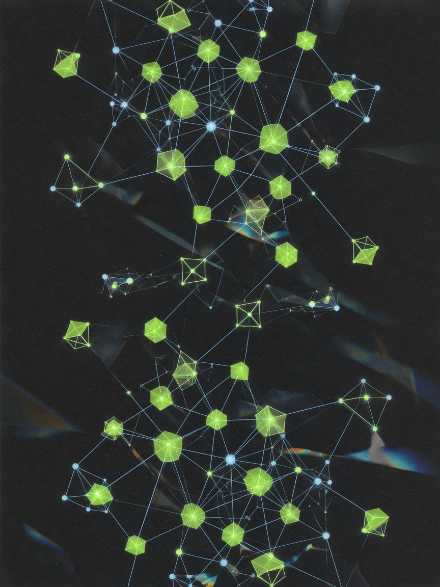

01 — OPEN SOURCE
Prowler
Cloud security platform. Shipped AWS EC2 idle-instance checks and SageMaker KMS encryption controls with tests + changelog.
Nithin Kumar Reddy — CS @ PES University. I design multi-agent orchestration, autonomous engineering tools, and cloud-native data pipelines. Contributor to Prowler.

I ship end-to-end systems — agents that plan and verify, pipelines that resize themselves mid-run, and security checks that land in real open-source scanners.
Currently exploring autonomous software engineering, cloud data platforms, and anything where reliability meets intelligence.
Drag / scroll horizontally · click through to repos
Cloud security platform. Shipped AWS EC2 idle-instance checks and SageMaker KMS encryption controls with tests + changelog.
Repository intelligence engine: AST, LSP, semantic search, multi-agent planning → reviewable PR-style fixes for GitHub issues.
Seven specialized agents plan, size, monitor, and heal ETL on Azure Data Factory + Databricks. ~30% less over-provisioning in eval runs.
Prompt → LLM plan → Playwright record → TTS narration → FFmpeg MP4. Automated product demos without manual recuts every release.
Fast backends, async services, systems-level thinking when it matters.
Azure ADF · Functions · ADLS · Databricks · Spark · Kafka · AWS · Docker · K8s
Multi-agent orchestration · RAG · LangChain · Transformers · scikit-learn
Grounded agent tooling that produces reviewable diffs — not free-form chat wrapped in a UI.
Internships · collabs · weird systems ideas — I’m in.